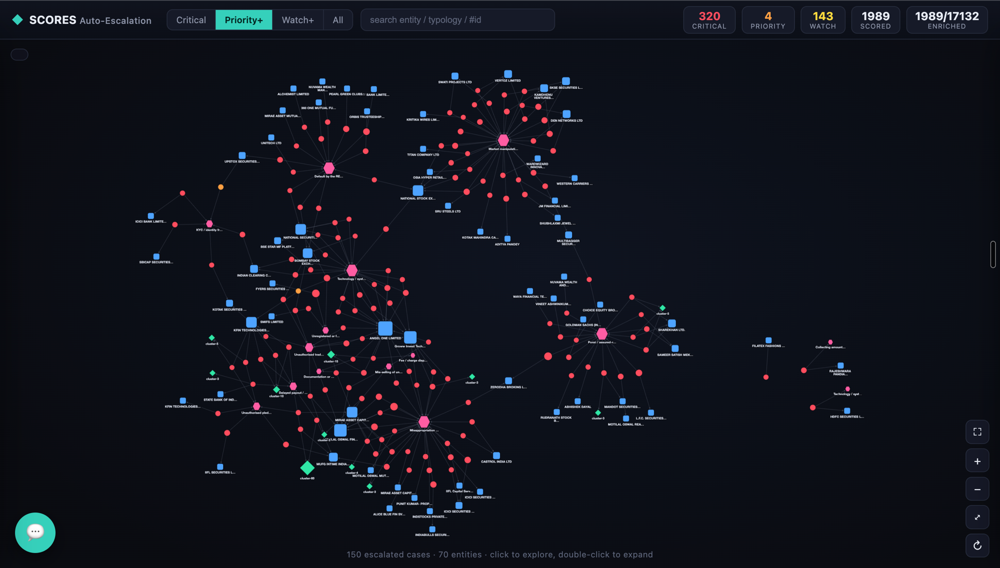
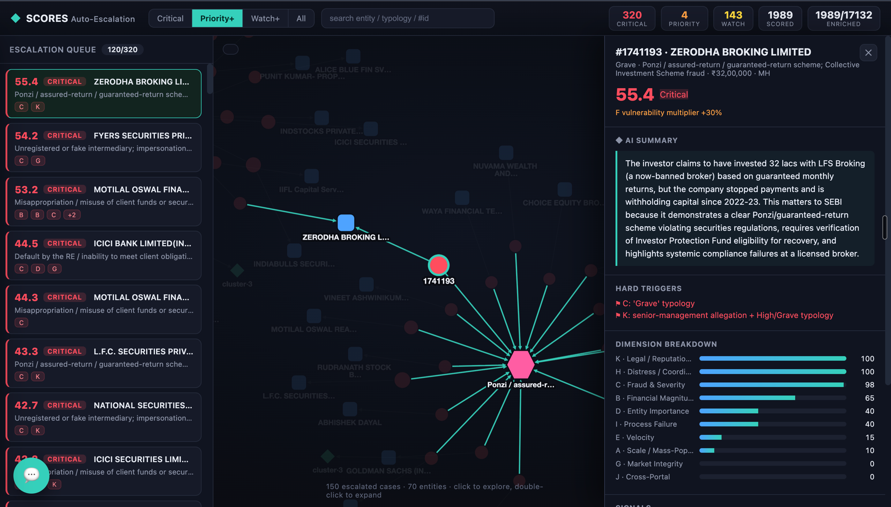
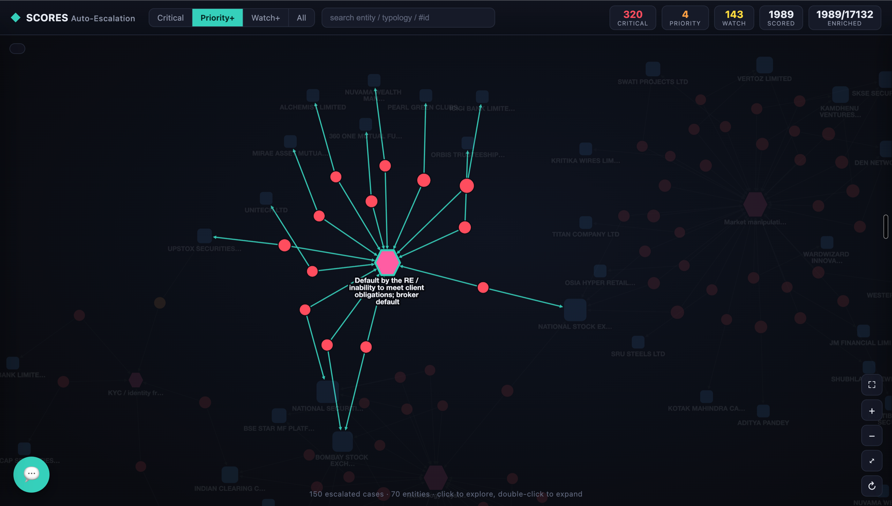
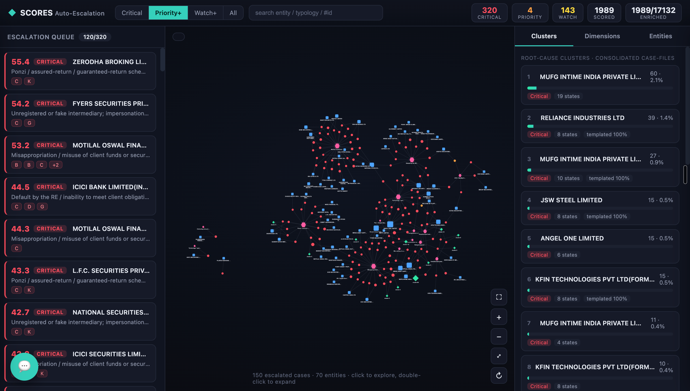
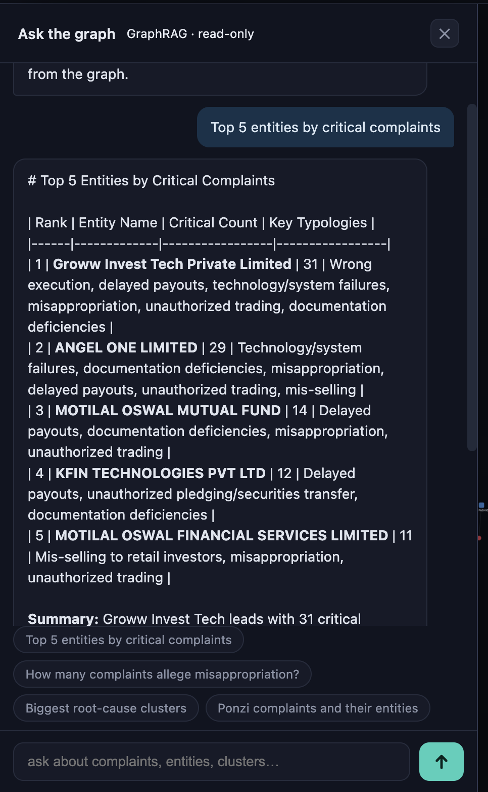

SEBI’s SCORES portal already classifies investor complaints by regulated-entity type and grievance. That answers “what kind of complaint is this?” It does not answer the question that matters most to senior management: “which of these, today, could signal harm to a large body of investors, a large quantum of money, or the integrity of the market — and therefore cannot sit in the routine queue?”
The Systemic-Criticality Auto-Escalation Framework (v1.0) defined what should escalate. This document specifies the product OnFinance AI has built to operationalise it: an AI analytics layer that reads each complaint — its text, its regulated entity (RE), its workflow history and the surrounding population — assigns a Systemic-Criticality Score (SCS), consolidates related complaints into single case-files, and auto-escalates the systemically significant ones to the appropriate SEBI officer with supporting evidence and reasoning.
Beyond realising the 11-dimension scoring, this platform adds three capabilities the framework anticipated but did not specify: a knowledge-graph that makes systemic patterns visible; an auto-escalation & notification engine that pushes critical cases to designated officers (§9); and an investigation surface — an interactive graph, AI case summaries and a natural-language chatbot — so officers can act on an escalation in minutes.
| Pillar | What it does |
|---|---|
| 1. Knowledge Graph | Every complaint, regulated entity, alleged wrongdoing (typology), product/scheme, investor and root-cause cluster becomes a connected node in a graph database (Neo4j). Patterns invisible in a table — 60 complaints about one IPO, a broker with a recurring fraud pattern, an issue spanning 8 states — become visible at a glance. |
| 2. Criticality Scoring | Each complaint is assessed across 11 independent dimensions (scale, money, fraud-severity, entity importance, velocity, vulnerability, market-integrity, distress, process-failure, cross-portal, legal). These combine into a single 0–100 SCS and a tier; any of nine hard triggers forces the top tier. |
| 3. Auto-Escalation & Notification | When a case (or a consolidated cluster) crosses a tier or fires a hard trigger, the engine routes it to the designated SEBI officer — by email and an in-dashboard alert — with the score breakdown, evidence and a recommended SLA (§9). |
| 4. Investigation surface | A live dashboard (ranked queue + knowledge-graph explorer), a one-line AI summary of every case, and an Ask-the-Graph chatbot that answers plain-English questions with a live, read-only query. |
| Metric | Value | Note |
|---|---|---|
| Complaints in the graph | 17,132 | Full Q4-2024 SCORES population loaded structurally |
| AI-enriched & scored | ~2,000 | Validation slice; full-population enrichment is a background job |
| Regulated entities · timeline events | 20,769 · 135,505 | Graph totals: 183k+ nodes / 230k+ relationships |
| Root-cause & cross-RE clusters | 615 | Consolidated case-files (571 root-cause + 44 cross-RE product) |
| Tier distribution (scored slice) | 320 Critical 4 Priority 143 Watch | 320 critical complaints consolidate to ~21 Tier-3 case-files |
The platform is a hybrid pipeline: it uses a ruler where a fact is obvious and an AI where a fact is buried in free text. Nothing is written back to the SCORES database.
A computer cannot reason over a paragraph, but it can reason over small three-part facts (“subject → predicate → object”). These are built two ways:
The entire platform runs as one standalone service. It consumes existing SCORES data through read-only reads and stores the graph and scores in its own database (Neo4j). No existing SCORES, CRUD or front-end service is touched (§11). The AI runs on Claude Haiku 4.5; for an air-gapped SEBI deployment it can be pointed at an on-prem LLM gateway without code changes.
The ontology is the fixed rulebook: exactly these kinds of node and exactly these kinds of relationship. That discipline is what makes the graph queryable and the KPIs countable.
| Node | Represents |
|---|---|
| Complaint | One investor grievance — carries the raw text, the structural fields, the AI signals, and the final score/tier |
| Entity | The regulated entity (broker, AMC, RTA, exchange…) complained against |
| Typology | The kind of alleged wrongdoing, from a Grave / High / Moderate library |
| Cluster | A consolidated “one root cause” case-file grouping many similar complaints |
| Product | The scheme / IPO / app / instrument named in the complaint |
| Investor | The complainant, stored as a one-way hash — no personal data is retained |
| Category · SubCategory · Location · TimelineEvent | SEBI taxonomy, geography, and the complaint’s workflow / ATR history |
| Relationship | Meaning | Source |
|---|---|---|
FILED_AGAINST, IN_CATEGORY, LOCATED_IN, FILED_BY, HAS_EVENT | which entity, category, state, investor, workflow log | Deterministic |
ALLEGES → Typology, IMPLICATES → Product | the wrongdoing & product read from the text | AI |
SIMILAR_TO, MEMBER_OF, AGAINST, ON_PRODUCT | semantic similarity & cluster membership | Derived |

Each complaint is scored 0–100 on eleven independent dimensions. The additive dimensions combine by weight; vulnerability (F) is a capped multiplier, not an additive term; and any single hard trigger overrides the maths to force Tier 3.
| # | Dimension | Weight | Core question |
|---|---|---|---|
| A | Scale / Mass-Population | 18% | How many investors, directly or by pattern? |
| B | Financial Magnitude | 16% | How much money is at stake — per case and in aggregate? |
| C | Fraud & Severity Typology | 16% | Is the alleged conduct inherently grave? |
| D | Entity Systemic Importance | 10% | Is the RE systemically important or under stress? |
| E | Velocity & Emergent Patterns | 10% | Is this surging or a brand-new typology? |
| G | Market-Integrity & Contagion | 10% | Could this threaten price discovery, settlement or trigger a run? |
| I | Process & Resolution Failure | 8% | Is the RE’s response evasive or chronically failing? |
| J | Cross-Portal & External Correlation | 6% | Does it corroborate other intelligence? (data-dependent — see §12) |
| H | Distress & Escalation Signals | 3% | Does the language signal fraud, coordination or acute distress? |
| K | Legal & Reputational Sensitivity | 3% | Does this carry institutional / legal / reputational risk for SEBI? |
| F | Vulnerable-Investor Impact | × multiplier | Are the affected investors disproportionately vulnerable? (amplifier, +0–30%) |
The composite SCS maps to four tiers, each with its own routing and SLA:
| Tier | SCS band | Meaning | Routing & SLA |
|---|---|---|---|
| Tier 0 · Routine | 0–39 | No systemic signal | Standard SCORES queue |
| Tier 1 · Watch | 40–59 | Warrants analyst eyes | Analytics watch-list; weekly digest |
| Tier 2 · Priority | 60–79 | Likely systemic | Division / Department Head within 48 hrs |
| Tier 3 · Critical | 80–100 or any hard trigger | Confirmed / strongly-suspected systemic risk | Senior-management / WTM-level desk within 24 hrs |

The dashboard is the senior-management working surface. It has three coordinated panels.


Every case carries a one- or two-sentence, plain-English summary generated by the AI from the complaint text — what the issue is and why it matters to a regulator. It is generated once and cached, so it opens instantly thereafter. An officer can grasp a case before reading a single line of the raw complaint.
Officers do not need to learn a query language. The built-in chatbot uses GraphRAG: a question in plain English is converted by the AI into a single read-only database query, executed against the graph, and answered in words — grounded entirely in the actual results.

This is the mechanism by which a critical issue stops being a row in a database and becomes an alert on the right person’s desk. When the scoring engine assigns a case (or a consolidated cluster) a tier — or fires a hard trigger — the notification engine determines who should know, how they are told, and how fast.
An escalation is raised on any of three cue types. Each is configurable by SEBI.
| Cue type | What fires it | Resulting tier |
|---|---|---|
| Hard trigger (9 defined) | Any single grave signal — a Grave typology (misappropriation, Ponzi, manipulation, RE default, fake entity); single case ≥ ₹5 cr or misappropriation ≥ ₹2 cr; a mass cluster (≥100 complainants / ≥3 states / cross-RE product); an MII in an integrity failure; a credible market-integrity signal; a cluster of second-level reviews against one RE; senior-management allegation + grave typology. | Critical |
| Composite threshold | The weighted 11-dimension SCS crosses a tier band (60 → Priority, 80 → Critical). | Priority / Critical |
| Emergent pattern | A velocity spike (≥4× an RE/product’s baseline) or a newly-formed mass cluster crossing the scale threshold. | Priority → Critical |
A configurable routing matrix maps each escalation to a recipient, a channel and an SLA, based on its tier plus any special dimension. Recipients are SEBI-maintained distribution lists / mailboxes.
| Escalation | Designated recipient | Channel | SLA |
|---|---|---|---|
| Tier 3 · Critical | Senior-management / WTM-level desk + relevant department | Immediate email + dashboard alert | Within 24 hrs |
| Tier 2 · Priority | Division / Department Head | Daily priority digest + dashboard | Within 48 hrs |
| Tier 1 · Watch | Dealing officer / analytics desk | Weekly digest + watch-list | Best-effort |
| Special: MII implicated | MII supervision cell | Immediate email | Within 24 hrs |
| Special: price-sensitive / confidential | Restricted list; confidential-handling flag set | Email (restricted); hidden on general dashboard | Within 24 hrs |
| Special: acute investor distress | Investor-services / duty-of-care desk | Immediate email | Prompt, humane handling |
Every notification is a complete, explainable case-file — not just “case X escalated”. It carries:
The recipient can open the case in one click, see the full graph neighbourhood, and confirm, de-escalate or re-route — every decision is logged.
To go live on email/chat, the engine emits each escalation as an event to a dispatch module (an “escalation outbox”); SEBI supplies (a) an SMTP relay or webhook endpoint and (b) the recipient mapping for the routing matrix in §9.2. Because the payload and routing are already computed, this is a thin, configuration-driven integration rather than new analytics — and the routing table, thresholds, recipients and digest cadence are all SEBI-tunable without code changes.
| Item | Description |
|---|---|
| Full-population enrichment | Extend AI scoring from the ~2,000-case pilot to all 17,132 complaints (a background job) for statistically complete KPIs. |
| Live notification integration | Connect the escalation outbox to SEBI’s SMTP relay / Slack / Teams and load the recipient routing matrix (§9.6). |
| SEBI control panel | A UI to tune thresholds, weights, typology mappings, routing and recipients — with change history — so no code change is ever needed. |
| Cross-portal correlation (Dimension J) | Wire in Market-Intelligence-portal / examination signals when access is granted (currently scored 0 and flagged, never fabricated). |
| Temporal baselines & recidivism | Rolling per-RE baselines and repeat-conduct detection as more historical data is ingested. |
| Feedback-driven recalibration | Use officer confirm / de-escalate decisions to periodically re-tune weights and thresholds. |
A 18% · B 16% · C 16% · D 10% · E 10% · G 10% · I 8% · J 6% · H 3% · K 3% (sum 100%); F = capped multiplier +0–30%. All configurable.
0–39 Routine · 40–59 Watch · 60–79 Priority · 80–100 (or any hard trigger) Critical.
| # | Dimension | Condition (default) |
|---|---|---|
| 1 | A — Scale | cluster ≥ 100 complainants, or ≥ 3 states, or cross-RE product ≥ 3 REs |
| 2 | B — Magnitude | single ≥ ₹5 cr; misappropriation ≥ ₹2 cr; cluster aggregate ≥ ₹50 cr |
| 3 | C — Typology | any “Grave” typology (misappropriation, manipulation, Ponzi, RE default, fake entity) |
| 4–5 | D — Entity | MII in an integrity/operational failure; payout/redemption-delay cluster (solvency stress) |
| 6 | G — Integrity | credible manipulation / settlement / run-risk / price-sensitive signal |
| 7 | I — Process | cluster of second-level-review escalations against one RE |
| 8 | J — Correlation | corroborates an open MI-portal subject / live examination (when data available) |
| 9 | K — Sensitivity | allegation against RE senior management/promoters + a High/Grave typology |
End of document. All thresholds, weights, typology mappings, routing rules and recipients in this platform are configurable defaults, tunable by SEBI without code changes.